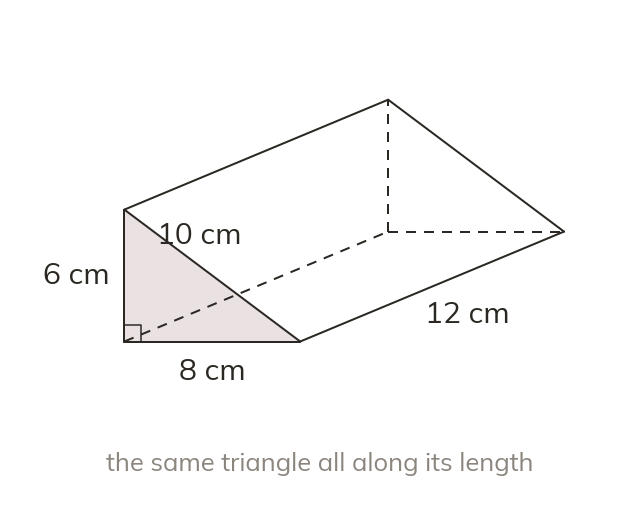
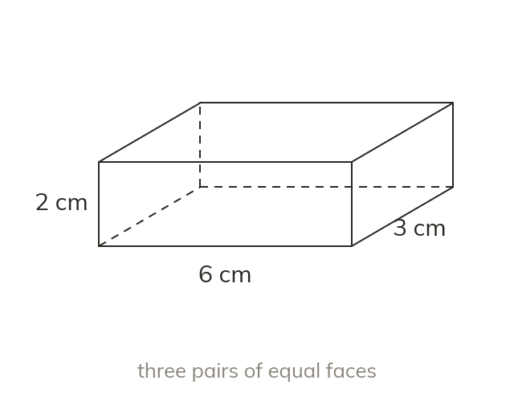
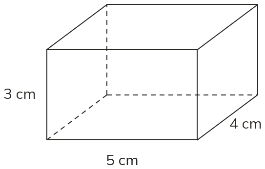
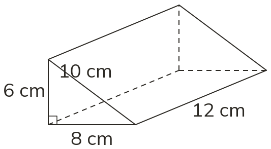
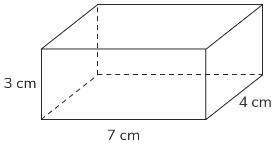
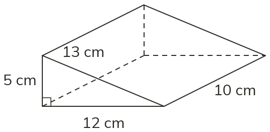
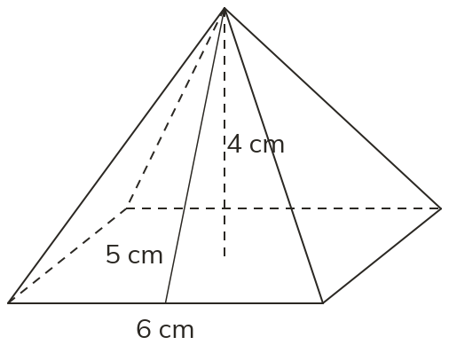
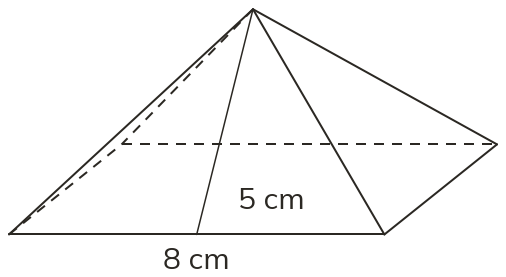

The same shape all along
A prism has the same cross-section all along its length. A triangular prism has two triangular ends and three rectangular faces.
A box maker pays for the card that wraps a box, and a painter for the paint that covers a tank. Both are paying for surface area.
Work down the page at your own pace. Write every answer in your book first, then click to check it.
Read each card, then follow the worked examples one step at a time.

A prism has the same cross-section all along its length. A triangular prism has two triangular ends and three rectangular faces.

Surface area is the total area of all the faces, in square units. A cuboid has three pairs of equal opposite faces.


Pick an answer. If it's wrong, the feedback tells you which mistake it was.


Read each card, then follow the worked examples one step at a time.
A cylinder's curved surface unrolls into a rectangle. It is 2 × π × r wide and h tall. The two circular ends add 2 × π × r².
A square-based pyramid has a square base and four equal triangles. Each triangle's height is the slant height up the face, not the vertical height inside.

Pick an answer. If it's wrong, the feedback tells you which mistake it was.

Finished? Next lesson: 10.11.2 Volume of Prisms and Cylinders.
Log in, then search for a code to practise that skill.